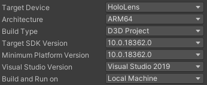
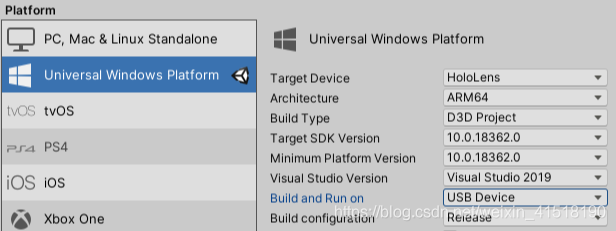
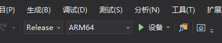
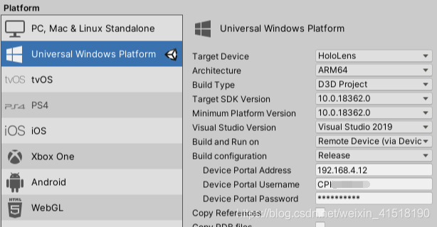
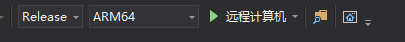
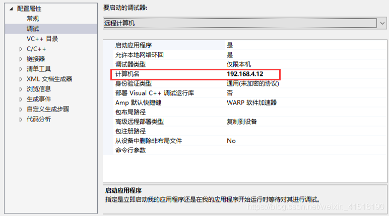
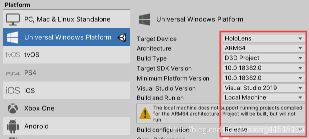
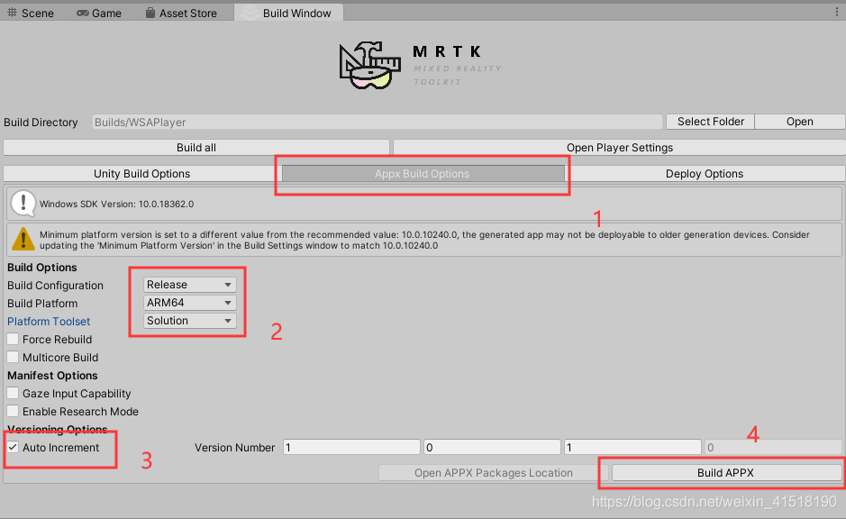
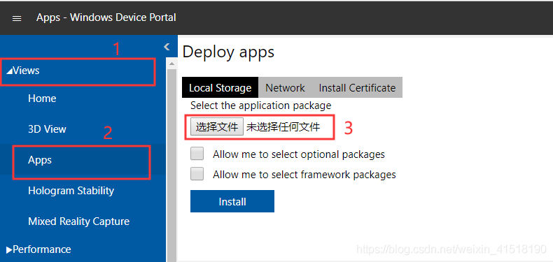
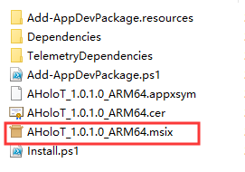

HoloLens2 已经发布几个月了，这里我们针对HoloLens2 的工程发布以及真机部署做一个总结
1.Unity 2019.3.13f1（Unity2018.4及以上版本）
2.Visual Studio Community 2019
Unity与VS的安装与开发环境部署可参考博文.
需要提示以下几点注意事项：
Unity：
1.工程应切换至UWP平台（如果没有该平台组件请先下载安装）；
2.Architecture选择ARM64（HoloLens2 基于ARM64）；
3.Minimum Platform Version选择10.0.18362.0及以上；
4.其他选项参考下图：

5.Player Settings中，XR Settings添加VR SDK的Windows Mixed Reality，设置均为默认；
Visual Studio:
Win 10 SDK 如果是通过VS安装包一起安装的，需要手动将安装位置的Windows Kits文件夹中的10文件夹复制到C盘的Windows Kits文件夹下（C:\Program Files (x86)\Windows Kits）
复制，不要剪切！！！
HoloLens2的工程部署分为三种方式：USB、WiFi和Web
Unity：
在Build Settings中将Build and Run on选择为USB Device，点击Build，如下图

Visual Studio:
选择Release下的ARM64，选择设备，用USB连接HoloLens2至电脑，点击运行，即开始生成部署，如下图

Unity：
在Build Settings中将Build and Run on选择为Remote Device，填写HoloLens2的IP地址，Web管理用户名和密码，点击Build，如下图

Visual Studio:
1.选择Release下的ARM64，选择远程计算机，如下图

2.选择项目->属性，进入项目属性页，选择调试，将HoloLens2的IP地址填写至页面，如下图

3.确保HoloLens2与计算机在同一网络下，并保持开启状态，点击运行，即开始生成部署
Unity：
1.在Build Settings中将Build and Run on保持默认，如下图

2.菜单点击 Mixed Reality ToolKit - >Build Window，出现如下界面，相关选项如下

注意：在Build Directory中可以选择导出位置（默认为工程目录下Builds文件夹）
3.点击Build APPX，导出安装包
4.在浏览器中输入HoloLens2 的IP地址，进入管理界面（需要输入用户名和密码）

5.点击 Views - > Apps - > 选择文件，到上文提到的安装包导出位置 - > AppPackages，选择对应的安装包（.msix/.appx文件）

6.回到浏览器，确保HoloLens2与计算机在同一网络下，并保持开启状态，点击Install，即开始部署
注意：该方式不支持覆盖安装，如果重复安装同一个App，需要先卸载再安装！！